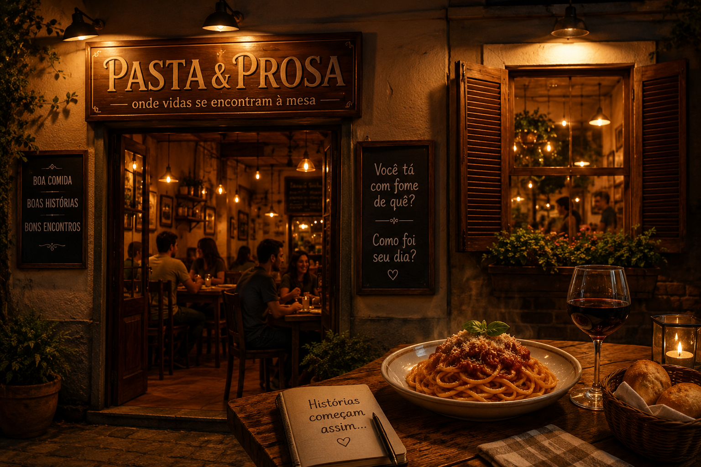

|
No meio de uma rua discreta, longe dos restaurantes caros e cheios de aparência, existia o Pasta & Prosa. Quem passava pela frente não dava muito — uma fachada simples, mesas de madeira e um cheiro constante de molho de tomate fresco no ar. Mas quem entrava… não esquecia. O restaurante era comandado por Antônio, um homem já mais velho, que falava pouco, mas observava tudo. Ele não acreditava que comida era só pra matar a fome. Pra ele, cada prato era uma desculpa pra fazer as pessoas desacelerarem — coisa rara hoje. O curioso é que o Pasta & Prosa não tinha cardápio fixo. Antônio perguntava duas coisas pra cada cliente: "Você tá com fome de quê?" e "Como foi seu dia?" Dependendo da resposta, ele decidia o prato. Uma noite, um rapaz entrou sozinho, claramente cansado. Disse que o dia tinha sido um desastre. Antônio não falou nada, só voltou com um prato simples: macarrão ao molho de alho e óleo, com pão quente. O rapaz comeu em silêncio… e quando terminou, parecia outro. Não porque o prato era sofisticado — mas porque alguém, pela primeira vez no dia, tinha realmente prestado atenção nele. Com o tempo, o restaurante virou ponto de encontro de gente muito diferente: casal em crise, amigos que não se viam há anos, gente comemorando conquistas ou tentando esquecer derrotas. E, de alguma forma, todos saíam dali mais leves. Mas o que quase ninguém sabia era que o próprio Antônio tinha criado o restaurante depois de perder a esposa. Antes disso, ele era só mais um chef obcecado por técnica e perfeição. A perda fez ele perceber uma coisa simples e dura: comida perfeita não adianta nada se não tem gente pra compartilhar. Então ele mudou tudo. O Pasta & Prosa nunca ganhou estrela, nunca virou moda em rede social, e Antônio nunca fez questão disso. Pra ele, sucesso era outra coisa — era ver alguém chegar fechado e sair conversando, era ver silêncio virar riso. E até hoje, quem entra lá não encontra só comida. Encontra tempo. Coisa que quase ninguém tem mais. |
 |